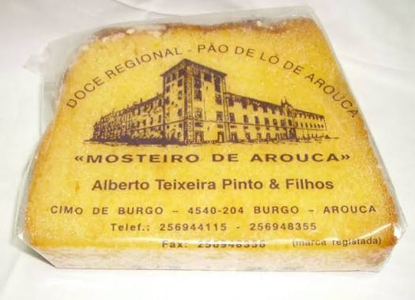

O Pão de Ló de Arouca não nasceu apenas de uma receita, mas de um legado. Após a extinção das ordens religiosas em 1834, o segredo da doçaria que deliciava as freiras cistercienses do Mosteiro da rainha Santa Mafalda de Arouca passou para as mãos de famílias locais dedicadas. Em 1840, a família Teixeira Pinto assumiu esta missão, transformando a arte sacra em património público.
Foi sob a visão de Alberto Teixeira Pinto que a casa consolidou o seu prestígio. Ao manter o uso rigoroso do **forno a lenha** e ao aperfeiçoar o "ponto" da calda de açúcar, Alberto garantiu que o nome da família fosse sinónimo de autenticidade. Hoje, os seus filhos e netos mantêm a chama acesa, produzindo as fatias que são, para muitos, o melhor pão de ló de Portugal.
A localização no Burgo não é por acaso: é o coração histórico da freguesia, onde o tempo parece correr mais devagar para que o pão de ló possa repousar e absorver a calda de açúcar no tempo certo.

O ex-libris. Batido durante mais de uma hora, é a sua cozedura lentamente que leva quase duas horas. O segredo final é o banho manual com **açúcar em ponto**, que sela a humidade e cria a crosta rendilhada que o tornou mundialmente famoso.

Um tesouro da doçaria de amêndoa. Esta iguaria conventual substitui o salgado pela riqueza da **amêndoa moída, açúcar e pão**, cozida lentamente até atingir uma consistência sedosa e um sabor que evoca os antigos banquetes monásticos.

A leveza absoluta. A massa aerada é mergulhada num **açúcar em ponto de seda**, resultando num exterior branco e firme que esconde um coração que se desfaz no paladar.

O biscoito da hospitalidade arouquense. Pequenos pedaços de história feitos com ovos e açúcar, mantendo a receita intocada desde o século XIX.

A simplicidade majestosa. Cozido à moda antiga no forno a lenha, preserva a textura de "nuvem" que o tornou a base de toda a nossa tradição familiar.
4540-204 Burgo, Arouca. Venha sentir o aroma da tradição.